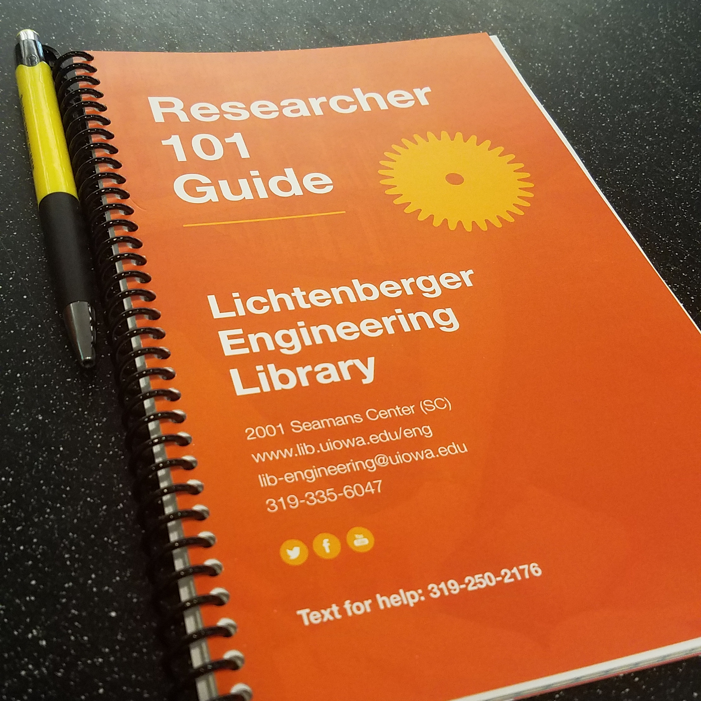

Please feel free to explore my projects. I have divided them into three categories 'Library Projects', 'School Projects', and 'Personal Projects'. Just select a tab below!
Library Projects are projects I have worked on as an employee. School Projects are projects that were major homework assignments or semester long projects. Finally, Personal Projects are those which I dedicate my time to for personal enjoyment or volunteer purposes.
Tool Guide
The biggest project that I have taken on at the Lichtenberger Engineering Library is the maintaining of the Tool Library. At the time of writing this the tool library consists of 172 tools that are free for students to borrow. But it is ever growing with more being added every few months. Each of the tools has a card that is kept with it. That card has key information (i.e. what is included, links to manuals, and a short description of its function). Those cards are made with Microsoft Publisher. There is a tool binder, which acts as a physical catalog. This is made using Microsoft Word. Finally, there is an online presence for the Tool Library. That started off as a Springshare LibGuide Site but it was transferred to a WordPress Site to match the rest of the Engineering Library Website. If a tool is added, the numbering system changes, or categories of tools changes each of those resources must be updated to reflect the new change. All three of those things have happened as the tool library has grown we have had to come up new methods which have improved the Tool Library.
The Tool Library WordPress can be found on the Engineering Library Website.
MECCA Week Research
This is a project that used my background as a historian and my work on the Museum Studies Certificate. The Director of University of Iowa Engineering Alumni Relations and Communications, Wendy Brentner, has an archive of the University of Iowa MECCA Week Celebration, which I had never heard of before this project. MECCA was a celebration of the College of Engineering for much of the 1900's (1910-1980s). I was required to take her records and add my own research, using skills I have gained while working in the library. I ended up using microfilm, digitized newspapers, a website that was made about alumni memories of MECCA, and a few other physical resources that I found to add to her archive.
The result of this project was a blog that is hosted on the Engineering Website, an exhibit that was on display during the month of March 2017 (a picture is found in the blog post), and a paper of the history that I found that was added to the archive and is hosted on the website as well.
Researcher 101
The University of Iowa College of Engineering has 300+ Graduate Students. This project started off as just to make a flyer for those students discussing the resources that are available to aid them in their research. But, then I had the idea why not make it a tool that they could use by making it into a journal for them to keep their notes. I wrote about the resources that were available, which takes up the first approx. 10 pages, and the rest is grid paper for notes or sketching. Another department on campus designed and produced the cover for the journal. They were all bound in the Engineering Library.
This project was exciting because it is a new way to promote library resources that hadn't been done before and provided me with experience on collaboration across campus departments!
Badging for Information Literacy
The project that will be evolving over this last year of graduate school for me is using technology to teach basic information literacy skills. Kari Kozak, Head of the Lichtenberger Engineering Library, has been developing a series called "Detective Jones" which are a series of "chose your own adventure" YouTube Videos that teach and explain information literacy concepts, such as the CRAAP Test.
My part in this project has been researching how to recognize individuals using badging for those complete the video series. The University of Iowa uses Canvas Learning Management System. Researching I found Badgr.io has a plug-in for Canvas. So, the decision was made that a Canvas "class" be set up with modules for each video series/information literacy skill and then Badgr.io awards badges once that module is completed. I am acting as the course designer so I have been using Canvas to make the modules and quizzes for the class.
Institutional Repository
For the class Data Management and Visualization, the final project was to use Medline data and construct an institutional research repository, an on-line information system housing descriptions of the activities of researchers. All the data was in a database already and the group I was in, Team_A, consisted of Aaron M., Ben S., Bharat S., John Y., and myself. This project used Java and SQL to produce the final product.
My parts in the project were working at the command line to remotely set up an Apache Tomcat Instance and then transfer the files for our project to that server so it could be accessed. Additionally, I wrote SQL queries to retrieve information from the database and made the Java pages where those results would be displayed, example to the right. I also included D3 visualizations into the project.
The code I generated for it can be seen on my GitHub Repository.
C++ Projects
Words
Raspberry Pi LAMP Stack
Words
Organizing Societies
Words
This Website
This website is a project that I undertook to both be used as a promotional tool for myself and to learn HTML and CSS. It is hosted on GitHub Pages and all the code for it can be seen on my GitHub Repository.
Iowa DeMolay Website
One of the tasks that I do for Iowa DeMolay is maintain their website. DeMolay International developed the framework for the website with a simple file management system for the backend. I act as a content creator and website manager. The front end for that website can be found at IADeMolay.org.
Iowa Inquisitor
Another thing I do for Iowa DeMolay, is act as the editor for the Iowa Inquisitor. It is the monthly e-Newsletter for Iowa DeMolay. It is written by the State Officers, the young men who lead DeMolay in Iowa. The Inquisitor is the newest edition to the communication for the state. Past editions can be found on the Iowa DeMolay Website.